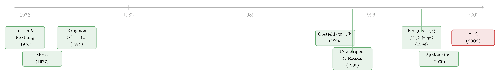

货币危机，其实是从公司的资产负债表里长出来的
本文读的是 Bris & Koskinen (2002, JFE)：一国之所以让本币贬值、酿成货币危机，未必是宏观基本面出了问题，而可能是因为——救那些高杠杆、陷入「债务积压」的出口企业，事后看是整个经济的最优选择。于是因果倒了过来：不是贬值砸坏了企业的资产负债表，而是企业的资产负债表逼出了贬值。
1 一个对不上账的危机
先说一个让经济学家很不舒服的事实。
1997 到 1998 年，亚洲那场货币危机来得又突然、又凶猛。可如果你回到 1997 年初，去翻这些国家的「体检报告」，会发现它们看起来健康得很：财政赤字不算大，经常账户在泰国、马来西亚是逆差，但在韩国、印尼却相当温和；就在一两年前，世界银行还把它们当成「审慎宏观管理」的好榜样在四处表扬。Krugman（1999）干脆下了结论：从宏观角度看，根本没有强有力的理由要这些国家贬值。Radelet 和 Sachs（1998）说得更狠，把危机的烈度归咎于货币市场上的金融恐慌，外加 IMF 的一通馊主意。
于是问题就摆在那里：一群宏观指标尚可的国家，为什么会集体被拖进货币危机？
传统的两代货币危机模型，在这里都有点接不上。这篇论文给出的答案，藏在一个被宏观模型长期忽略的地方——公司的资产负债表。具体说，是出口企业「杠杆太高、盈利太差」这八个字。
2 先把因果关系掰正
要理解这篇文章的贡献，得先弄清楚它和别人「吵」的是什么。
在 Krugman（1979）和 Flood & Garber（1984）开创的「第一代」模型里，故事是财政赤字靠印钞来填，外汇储备一点点流失，最后引来对货币的投机性攻击。在 Obstfeld（1994）开创的「第二代」模型里，故事是失业高企让政府有动机主动贬值，市场看穿了这层动机，攻击货币反过来又抬高了政府贬值的意愿，自我实现。这两代模型有一个共同点：汇率是主角，企业最多是背景板。
到了亚洲危机，一批新模型开始把「金融困境」请进中心。但请注意，Aghion et al.（2000）和 Krugman（1999）这一支，因果方向和本文恰好相反：在他们那里，是某个冲击或信心崩塌先引发了贬值，贬值再砸坏企业的资产负债表（因为企业欠了外债），从而恶化危机。换句话说，在那些模型里贬值降低了企业的盈利能力。
而本文的因果是反过来的：是资产负债表的问题先逼出了贬值。之所以能反过来，关键在于一个被前人忽略的细节——对一家「收入以美元计价、成本以本币计价且短期黏住不动」的出口企业来说，贬值非但不会砸坏它，反而会抬高它新投资的盈利能力。
这个「贬值到底是利空还是利好」的分叉，是全文的命门。Aghion-Krugman 那一支默认外债会因贬值而膨胀（利空）；本文则盯住出口企业「美元收入、本币黏性成本」的结构，让贬值变成了利好。同一个动作，两种符号，两套世界观。（关于「债务视角」如何把汇率的因果重新颠倒过来，也可参见《美元为什么敢借得又贵又险？》。）
那么，企业的资产负债表，究竟是怎么一步步把一国的货币推下水的？我们需要一个模型。
3 模型：两期、两市场、一个「该投不投」的难题
模型是两期、两个市场（世界市场和国内市场）。一家代表性出口企业在国内生产、把产品卖到世界市场上去，它的产出是这个经济体唯一的出口收入来源。所有人风险中性，世界利率 \(r^*\) 归一化为零。\(t=0\) 时本币盯住外币，汇率 \(e_0=1\)（一单位本币换一美元）。
企业可以投两个项目，初始投资都是本币计价的 \(I_1\)，产出都是卖到国外、用美元定价的可贸易品：
- 安全项目 S：在 \(t=1\) 稳稳拿回 \(X_s\) 美元；
- 风险项目 R：以概率 \(p\) 拿回 \(\bar{X}\) 美元，以概率 \(1-p\) 一无所获。
风险项目一旦失败，企业还有一次「续作」的机会：在 \(t=1\) 再投 \(I_2\)（本币计价），到 \(t=2\) 稳稳拿回 \(\bar{X}\) 美元，且这笔续作是正净现值的。这里有一个至关重要的设定：\(I_2\) 的成本是提前一期就定死的，所以即便货币贬值，\(I_2\) 的本币成本也不会变——这正是「本币成本黏性」的数学化身。若不续作，企业被清算，清算价值 \(L=0\)。
整个模型由一组不等式拴在一起：
$$\bar{X} > X_s > I_1 > \bar{X} - I_2 > 0$$
逐项读一遍，你就明白这家企业的全部纠结：\(\bar{X}-I_2>0\) 说续作有利可图；\(I_1 > \bar{X}-I_2\) 说续作创造的价值，抵不上当初借的钱——这就是「债务积压」的火种；\(X_s > I_1\) 说安全项目本身也是正净现值；\(\bar{X} > X_s\) 说风险项目一旦成功，回报最高。
4 债务积压：明明该投，却偏偏不投
「债务积压（debt overhang）」这个词，最早是 Myers（1977）提出来的，本文几乎就是把它搬到了开放经济里。机制其实很朴素。
假设风险项目用债务融资。债权人不傻，他知道项目会以概率 \(1-p\) 失败、失败后清算一无所获，于是要求一个能让自己保本的面值 \(F_R\)：
$$I_1 = p\,F_R + (1-p)\cdot 0 \quad\Rightarrow\quad F_R = \frac{I_1}{p}$$
注意 \(F_R = I_1/p > I_1 > \bar{X}-I_2\)。这意味着：风险项目失败后，续作能创造的价值 \(\bar{X}-I_2\)，还不够还债。续作赚来的钱全进了债权人的口袋，股东一分捞不着——于是股东宁可让公司清算，也不肯掏 \(I_2\) 去续作。一笔本来正净现值的投资，就这么被「该投不投」地浪费掉了。
这就是债务积压的牙齿：它不是让企业借不到钱，而是让企业在事后丧失了把好项目做下去的动力。（关于债务这把双刃剑如何同时激励与扭曲，可参见《债务这副药，为什么不能全吃？》。）
如果换成股权融资呢？那就没有这层积压：股东在 \(t=1\) 面对 \(\bar{X}-I_2>0\)，当然愿意续作。所以本文有一个干净的基准结论（命题 1）：
当贬值不可能发生时（比如加入了共同货币区、丧失了货币主权），企业总会选择社会最优的那个项目。\(p \geq p^*\) 时选风险项目、并用股权融资以绕开债务积压；\(p < p^*\) 时选安全项目。一切都很美好。
这里的门槛 \(p^*\) 是这么定的——让风险项目和安全项目对整个经济的实际收入价值相等：
$$p^* = \frac{X_s - \bar{X} + I_2}{I_2}$$
而风险项目（含失败后续作）给经济带来的价值是 \(p\bar{X} + (1-p)(\bar{X}-I_2) = \bar{X}-(1-p)I_2\)。一比就知道：\(p > p^*\) 时风险项目对经济更值钱，反之安全项目更值钱。
到这里，一切都还「正常」。真正的反转，发生在我们把货币这根杠杆交回到政府手里之后。
5 关键一步：贬值如何「救活」被积压的投资
现在让政府重新拥有货币主权：它不再死守汇率，可以选择让本币浮动。政府的目标是最大化经济体的实际收入。
设想风险项目失败、企业陷入债务积压、股东拒绝续作。这时政府眼睁睁看着一笔正净现值的投资要被清算（清算只值 \(I_2\) 的机会成本，即那些资产挪作他用的价值），它当然不甘心。怎么办？贬值。
贬值之所以管用，全靠那个「美元收入、本币黏性成本」的结构。续作的收入是 \(\bar{X}\) 美元，贬值后汇率从 1 变成 \(e>1\)，这笔美元收入折成本币就放大成了 \(e\bar{X}\)；而成本 \(I_2\) 和旧债 \(F\) 都是本币计价、且 \(I_2\) 已被提前锁死。政府只要把汇率贬到让投资人恰好保本，续作就重新变得可行了。这个临界汇率就是全文的核心方程：
这条式子把整篇文章的机制压缩成了一行：政府把汇率贬到 \(e=(I_2+F)/\bar{X}\)，让贬值后的本币收入 \(e\bar{X}\) 刚好覆盖新投资 \(I_2\) 与旧债 \(F\)。于是续作能做了，经济体多拿回了实际收入。这就是「事后救助」——而它是通过汇率、而不是通过财政转移完成的。
那么贬值的代价由谁承担？由提供 \(I_2\) 的那些供应商：他们的本币成本被黏住了，贬值后他们事实上少收了真实价值。损失被悄悄转嫁给了「投资品的供给方」。
6 于是反转出现：企业故意借债，把政府架上贬值的火
读到这里，一个聪明的读者会立刻闻到一股不对劲的味道。
既然政府愿意为陷入债务积压的出口企业兜底，那么企业会不会反过来利用这一点？答案是会，而且这正是全文最辛辣的一笔。
回想命题 1：在没有贬值时，为了避开债务积压，企业本该用股权去融资风险项目。可一旦贬值成为可能，股权融资反而变成了下策。因为：
- 用股权融资，失败后续作的代价由股东自己扛；
- 用债务融资、且事先承诺不和债权人重新谈判，失败后企业就陷入积压，政府只好贬值来救——而贬值的代价由供应商承担，不由企业自己承担。
更妙（或者说更糟）的是私下债务重组（debt renegotiation）这条本可以堵住漏洞的路。本文证明：风险项目「债务融资 + 允许重组」与「股权融资」在事后是完全等价的——重组同样能化解积压、让续作发生，于是也就用不着贬值了。可问题在于，重组的代价最终落在企业自己头上，而贬值的代价落在供应商头上。所以企业有强烈的动机去事先承诺「绝不重组」，比如把债权分散给很多债主，让重组在技术上变得不可能。这正好接上了 Dewatripont & Maskin（1995）和 Bolton & Scharfstein（1996）的洞见：把信贷「去中心化」、断掉再融资的可能，本身就是一种承诺机制。
于是事前的图景变成了这样：企业明知道安全项目更值钱（\(p < p^*\)），却仍然一头扎进风险项目、用债务融资、并赌定政府会来救。它赚走了上行的收益，却把下行的损失甩给了汇率。这就是模型标题里那句话——过度冒险（excessive risk taking）。这与 Jensen & Meckling（1976）「高杠杆诱发对风险项目的过度投资」一脉相承，只不过这里的「兜底人」从债权人换成了整个国家的汇率。
政府其实很想承诺「绝不贬值」（如果安全项目对整个经济更有价值的话）。但金融市场和企业都心知肚明：真到了那一步，政府还是会松手让货币浮动去救人。所以政府「守住固定汇率」的承诺根本不可信——这是典型的时间不一致。
7 但贬值未必总是坏事：一个被低估的「保险」功能
如果故事到此为止，那贬值就只是个坏东西。可本文的高明之处在于，它紧接着给了贬值一次平反。
当风险项目的期望价值确实更高（\(p > p^*\)）、且企业不得不依赖债务融资时——比如股权市场欠发达，企业根本融不到股权——情况就不同了。这时若没有贬值，受困于债务积压的企业可能只能退而求其次去选那个不那么赚钱的安全项目。而贬值的存在，反而让企业敢去做那个更有价值的风险项目，因为它知道失败后续作能被救活。此时，贬值是一份事前最优的保险。
这一笔，恰恰把矛头指向了新兴市场的制度软肋：股权市场越不发达（想想 La Porta et al. (1998) 笔下「投资者保护差→股权市场小」的因果），企业越是被迫吃债务，债务积压的问题就越严重，对「贬值这剂药」的依赖也越深。换句话说，货币危机的根，扎在公司治理与金融发展的土壤里。这也呼应了 Johnson et al.（2000）的发现：外部投资者保护越弱的新兴市场，危机中的贬值幅度越大。
还有一个反直觉的推论值得单拎出来：如果企业的旧债是外币计价的，那么贬值在抬高美元收入的同时，也抬高了这笔外债的本币负担，于是需要更大幅度的贬值才能恢复投资激励。所以——外债非但不是缓冲，反而让问题更糟。回到亚洲：恰恰是危机前的资本市场自由化，让这些国家的企业大举增加了外币借款，把本就高企的杠杆又推高了一截。
8 文献脉络
把这条线索捋一遍，你会看到两条河在 2002 年这篇文章里汇流。
一条是公司金融的河：Myers（1977）的债务积压、Jensen & Meckling（1976）的过度冒险，是这套机制的源头；Dewatripont & Maskin（1995）和 Bolton & Scharfstein（1996）则提供了「为什么企业能承诺不重组债务」的微观基础；Gertler（1992）和 Lamont（1995）把债务积压搬进了宏观波动。
另一条是货币危机的河：Krugman（1979）、Flood & Garber（1984）的第一代（财政赤字→储备流失），Obstfeld（1994）的第二代（失业→主动贬值），再到亚洲危机后 Corsetti et al.（1998, 1999）的「隐性担保→过度投资」、Chang & Velasco（1998）把 Diamond & Dybvig（1983）的银行挤兑搬成货币挤兑、Allen & Gale（2000）的「货币危机作为风险分担」、以及 Aghion et al.（2000）和 Krugman（1999）的「资产负债表」一支。
本文的位置，正是这两条河的交汇点：它借公司金融的「债务积压 + 过度冒险」，给货币危机文献提供了一个因果方向相反的微观基础——balance sheet → depreciation，而非反之。

9 评论与延伸（Q&A + 研究方向）
(a) 几个可能的疑问
Q：这和「道德风险」那一派（Corsetti et al.）到底有什么不同？
关键在于「谁被担保」。Corsetti 那一派担保的是债权人的资本：金融机构知道出事了政府会兜底，于是放任过度投资。本文担保的是出口企业投资的成功：被救的不是金融家的回报，而是企业续作项目的可行性，且救助是通过贬值（汇率）而非直接的财政转移完成的。机制和落点都不一样。
Q：为什么企业宁可贬值，也不愿私下和债主重组债务？
因为代价的归宿不同。重组能化解积压，但代价由企业自己承担；贬值同样能化解积压，代价却被转嫁给了供应商（本币成本黏性）。所以企业有动机事先把重组这条路堵死（如分散债权人），逼政府只能用贬值来救。文中证明「债务+重组」在事后等价于「股权融资」，正是为了点明：企业是在主动放弃这个等价物。
Q：贬值到底是利空还是利好，凭什么本文说是利好？
全靠出口企业「美元收入、本币黏性成本」的结构。续作收入是美元 \(\bar{X}\)，贬值把它在本币里放大成 \(e\bar{X}\)，而成本 \(I_2\) 是提前锁死的本币。所以贬值抬高了新投资的本币盈利能力。Aghion-Krugman 那一支默认外债会因贬值膨胀（利空），是因为他们盯的是负债端的货币错配，本文盯的是收入端的货币结构。
Q：那为什么外债反而「雪上加霜」？
因为旧债若是外币计价，贬值在放大美元收入的同时，也放大了这笔外债的本币负担。要让 \(e\bar{X}\) 覆盖被推高的债务，就需要更大的 \(e\)。所以外币债务要求更大、更频繁的贬值——这恰好是亚洲危机前资本自由化埋下的雷。
Q：贬值既然「事后总是最优」，那它什么时候是「事前有害」的？
当安全项目其实更有价值（\(p < p^*\)）时。企业明知如此，却因为有贬值兜底而仍去赌风险项目、用债务融资，于是把社会引向了次优。反过来，当 \(p > p^*\) 且企业被迫吃债务（股权市场欠发达）时，贬值又成了让更优的风险项目得以实施的「保险」。同一个工具，事前的好坏取决于 \(p\) 落在门槛的哪一侧。
Q：这是个纯理论模型，它能被检验吗？
文中第 6 节给了若干可检验含义：危机国应当是「出口导向、企业高杠杆、低盈利」的；资本自由化应推高外币借款与杠杆；股权市场越不发达、外债越多，贬值幅度应越大。这些都是横截面上可以拿数据去怼的预测——只是论文本身没有做实证，留给了后人。
(b) 几个可能的研究问题与提案
1. 把「贬值幅度 ~ 企业杠杆」这条预测拿去实证检验。 - 【经济故事】本文预测：一国出口部门的杠杆越高、盈利越低、外币债务越多、股权市场越浅，危机中的贬值幅度应越大。这是一个干净的横截面假说。 - 【可行性】中。需要跨国的企业层面资产负债表数据（如 Worldscope、各国上市公司财报）+ 危机期间的汇率变动。识别上的麻烦是反向因果（贬值也会改变事后杠杆），可考虑用危机前的杠杆与货币结构作为前定变量。Johnson et al.（2000）已做过治理维度，杠杆维度仍有空间。
2. 用公司债 / 信用利差，反推市场对「汇率兜底」的定价。 - 【经济故事】如果市场相信政府会用贬值救高杠杆出口商，那么这类企业的本币债与外币债之间、以及它们相对于内需型企业的信用利差，应当隐含一块「贬值保险」的价值。 - 【可行性】中偏低。需要新兴市场企业的本币/外币债券价差数据，识别「兜底预期」与其他风险因素的分离很难。可借鉴《汇率藏在一张「违约保单」的价差里》的思路，把汇率风险从信用利差里剥出来。
3. 外资持有人是缓冲还是放大器？ - 【经济故事】本文说外币债务会放大贬值压力。一个自然的延伸：当出口企业的债权人以外资为主时，「事先承诺不重组」是否更容易达成（外资债权人分散、协调成本高），从而让贬值更不可避免？ - 【可行性】中。需要企业债权人的国别/类型结构数据，这在新兴市场常常缺失。可在有债权人登记的市场（如部分银团贷款数据库）里做子样本检验。
4. 把「成本黏性」内生化。 - 【经济故事】本文的核心假设是 \(I_2\) 的本币成本提前锁死。如果让供应商理性预期到自己会被贬值「揩油」，他们会不会事前就把价格提高、或要求外币计价合约，从而部分抵消掉贬值的救助效果？ - 【可行性】高（纯理论）。在现有两期框架里加一个供应商的定价/计价选择，就能把「黏性」从外生假设变成均衡结果，预计会得到「救助力度被供应商的事前反应削弱」的新含义。
5. 共同货币区作为「承诺装置」的福利权衡。 - 【经济故事】命题 1 表明，放弃货币主权（加入共同货币区）能消除「过度冒险」，但代价是失去了「贬值保险」。当 \(p\)、股权市场深度在企业间异质时，加入货币区的净福利如何？ - 【可行性】高（理论）/中（校准）。可在本文框架上加一个异质企业分布，求加入货币区的总福利，再用欧元区 vs. 新兴市场的参数做校准对比。
评论与判断
这篇文章最漂亮的地方，是用一套纯公司金融的语言，给货币危机写了一个全新的微观基础，并且干净利落地把因果方向掰了过来：不是贬值砸坏了企业，而是企业的高杠杆逼出了贬值。它把「债务积压」「过度冒险」「不可信的固定汇率承诺」三块积木，严丝合缝地拼成了一个能解释亚洲（乃至芬兰 1991–1993）危机的故事。尤其是「贬值的代价被本币黏性成本转嫁给供应商」这一笔，既给了贬值利好的微观渠道，又顺手解释了企业为何主动选债务、主动不重组——逻辑的咬合非常令人愉快。
但要诚实地说，它的软肋也很清楚。第一，整个机制吊在「\(I_2\) 的本币成本事前锁死」这根弦上；一旦供应商理性预期到自己要被揩油，黏性就未必成立，救助的力量会打折——这恰恰是上面第 4 个研究方向想补的洞。第二，模型是单一代表性企业，把「所有企业的风险项目同时失败」当成了完全相关的冲击；现实里负面冲击的相关性有多高，直接决定了「系统性贬值」是否真会发生，文中只用 Harvey & Roper（1999）等做了旁证，没有内生化。第三，也是最根本的，这是一篇没有数据的论文——它给出了一串漂亮的可检验含义，却把检验留给了别人。
我最想看到的后续，是有人真的把「危机前出口部门杠杆 → 危机中贬值幅度」这条线，放到跨国企业层面的数据里去跑一遍，并且想办法把本文的渠道（balance sheet → depreciation）和 Corsetti 那一派的渠道（隐性担保 → 过度投资）在实证上分开。在「外资持有、信用市场、流动性」越来越被重视的今天，这套二十多年前的理论，反而可能比当年更对得上账。
参考文献
Aghion, P., Bachetta, P., Banerjee, A. (2000). Currency crises and monetary policy in an economy with credit constraints. CEPR Working Paper DP2529.
Allen, F., Gale, D. (2000). Optimal currency crises. Carnegie–Rochester Series on Public Policy 53, 177–230.
Bolton, P., Scharfstein, D. (1996). Optimal debt structure and the number of creditors. Journal of Political Economy 104, 1–25.
Bris, A., Koskinen, Y. (2002). Corporate leverage and currency crises. Journal of Financial Economics 63(2), 275–310.
Chang, R., Velasco, A. (1998). Financial fragility and the exchange rate regime. NBER Working Paper 6469.
Corsetti, G., Pesenti, P., Roubini, N. (1999). Paper tigers? A model of the Asian crisis. European Economic Review 43, 1211–1236.
Dewatripont, M., Maskin, E. (1995). Credit and efficiency in centralized and decentralized economies. Review of Economic Studies 62, 541–555.
Diamond, D., Dybvig, P. (1983). Bank runs, deposit insurance, and liquidity. Journal of Political Economy 91, 401–419.
Flood, R., Garber, P. (1984). Collapsing exchange rate regimes: some linear examples. Journal of International Economics 17, 1–13.
Gertler, M. (1992). Financial capacity and output fluctuations in an economy with multiperiod financial relationships. Review of Economic Studies 59, 455–472.
Jensen, M., Meckling, W. (1976). Theory of the firm: managerial behavior, agency costs, and ownership structure. Journal of Financial Economics 3, 305–360.
Johnson, S., Boone, P., Breach, A., Friedman, E. (2000). Corporate governance in the Asian financial crisis. Journal of Financial Economics 58, 141–186.
Krugman, P. (1979). A model of balance of payments crises. Journal of Money, Credit, and Banking 11, 311–325.
Krugman, P. (1999). Balance sheets, the transfer problem, and financial crises. Working paper, MIT.
Lamont, O. (1995). Corporate-debt overhang and macroeconomic expectations. American Economic Review 85, 1106–1117.
La Porta, R., Lopez-de-Silanes, F., Shleifer, A., Vishny, R. (1998). Law and finance. Journal of Political Economy 106, 1113–1155.
Myers, S. (1977). Determinants of corporate borrowing. Journal of Financial Economics 5, 147–175.
Obstfeld, M. (1994). The logic of currency crises. Cahiers Economiques et Monétaires 43, 189–213.
Radelet, S., Sachs, J. (1998). The onset of the East Asian financial crisis. NBER Working Paper 6680.